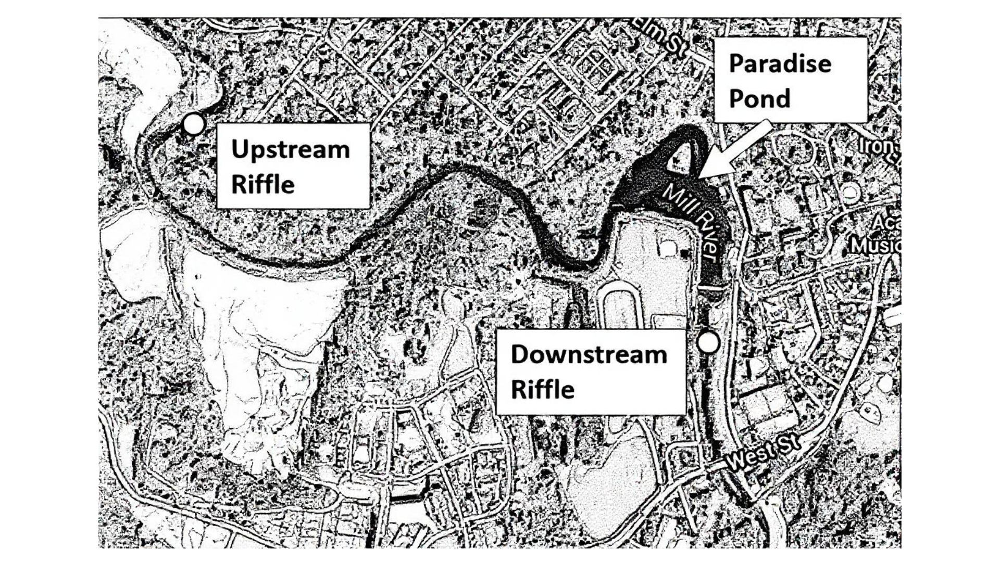

Quick Context
What this dashboard helps you compare
Sites
Upstream = control
Downstream = impact
Time
Summer and Fall
2019 = Before
2020–2024 = After
Variables
pH
Conductivity
Flow
Density
Study Area
Where are the sampling sites?
The dashboard compares an upstream control site and a downstream impact site around Paradise Pond.

This map provides spatial context for the dashboard. Use it to orient the upstream and downstream sampling locations before comparing the charts below.
Interactive Dashboard
Compare environmental conditions and feeding groups
Start by choosing a season, period, or feeding group. Then compare upstream and downstream across all three views.
pH vs Density by Feeding Group
Compare pH and macroinvertebrate density across feeding groups
Encoding: x = pH, y = density, color/shape = location
Conductivity vs Density by Feeding Group
Compare conductivity and macroinvertebrate density across feeding groups
Encoding: x = conductivity, y = density, color/shape = location
Average Density by Feeding Group and Location
Grouped comparison of average density for each feeding group
Encoding: x = feeding group, y = average density, color = location
Reading the Views
What to look for
Graph 1
How density changes across pH values
Graph 2
How density changes across conductivity values
Graph 3
How average density differs by feeding group and location